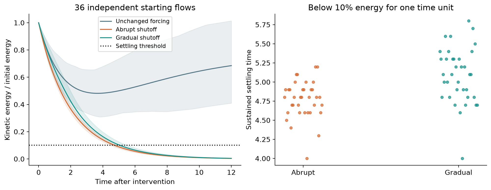
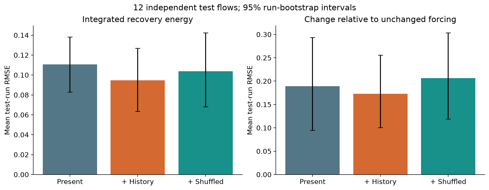
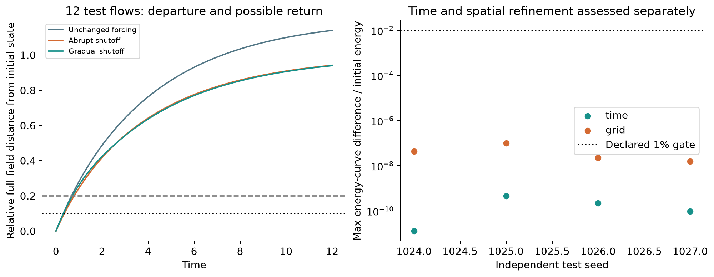
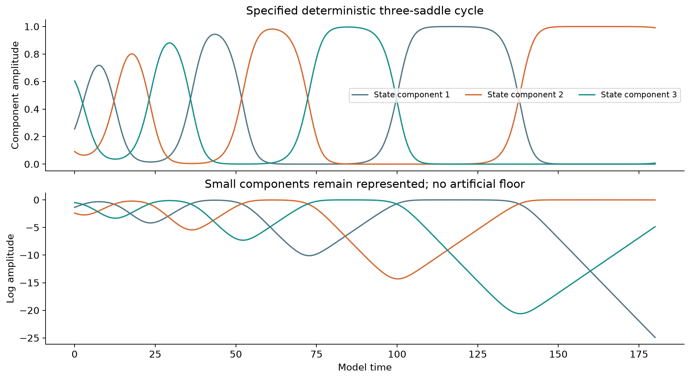
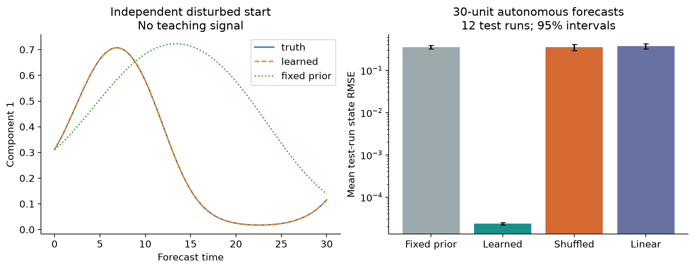
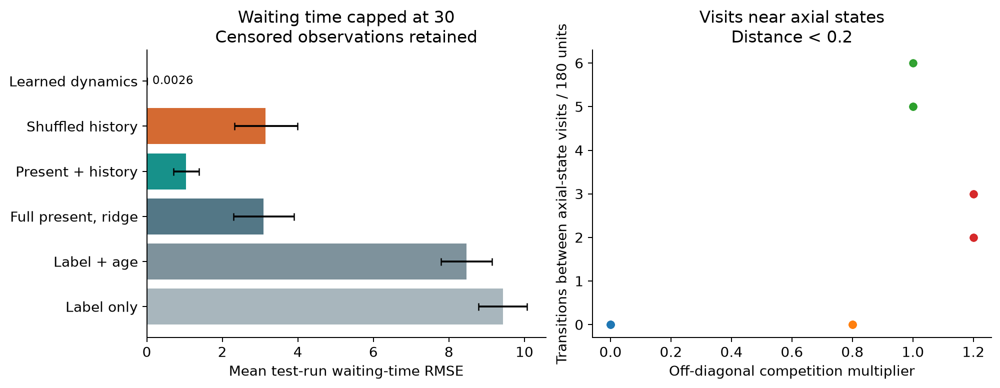

Completed numerical extension pilot · 10 October 2026
Main findings: gradual shutoff delays observed settling by about 0.32 model-time units on average. Fluid history lowers integrated-energy prediction error against the present-only model, but its paired advantage over shuffled history has an interval spanning zero. The intervention-specific energy difference likewise has no statistically resolved history advantage. In the specified network, frozen coefficient learning forecasts independent trajectories accurately; full-state dynamics outperform the history regression.
Run instructions · Declared protocol · Fluid results table · Network regimes · Automated tests
The fluid ensemble has 36 independent starting fields, each copied into unchanged, abrupt-shutoff, and gradual-shutoff branches (108 primary trajectories). Eight additional three-branch calculations separately check halved time steps and finer grids on four seeds. A separate preliminary screen is excluded from ensemble statistics. The network has 36 primary paired starts, 40 paired coupling/topology controls and 12 paired numerical refinements. Each prediction study uses 18 training, 6 validation and 12 entirely separate test initializations. Multiple branches or times from one initialization never count as independent replicates.
We integrate ∂u/∂t = −P[(u·∇)u] + ν∇²u + A(t)f₀ on a periodic cube of side 6, with ∇·u=0, ν=0.2, 18³ grid points and RK4 step 0.02. Strict two-thirds Fourier dealiasing uses the existing pilot operators. f₀ is a fixed solenoidal Beltrami field with RMS 0.06. A=1 for the control, A=0 after abrupt shutoff, and A=max(1−t/2,0) for gradual shutoff. Both interventions reach zero forcing, but their cumulative input work differs and is recorded.
Random low-mode initial fields have RMS speed drawn from 0.4–0.8 and evolve for 2 time units before copying. This is a reproducible transient baseline, not a claim of statistical stationarity. The post-intervention observation lasts 12 units. All lengths, times and coefficients are model units; these are not new water/air material calibrations. This extension observes field organization; it introduces no forces between passive markers.
Settling means kinetic energy at or below 10% of its value at shutoff, continuously for one observed time unit. Samples are 0.1 units apart, so crossing times have that resolution. First arrivals and sustained arrivals are saved separately. Runs without a complete residence window are right-censored. The table reports mean and 95% run-bootstrap intervals; censored runs are counted and excluded only from the explicitly conditional observed-settling-time mean.
| Arm | Settled /36 | Censored | Observed settling time [95% CI] | ∫₀⁸ E/E₀ dt [95% CI] |
|---|---|---|---|---|
| unchanged | 0 | 36 | Not observed | 4.543 [4.208, 4.925] |
| abrupt | 36 | 0 | 4.772 [4.692, 4.847] | 1.98 [1.944, 2.013] |
| gradual | 36 | 0 | 5.089 [4.967, 5.206] | 2.193 [2.119, 2.267] |
Gradual minus abrupt settling time, among jointly observed pairs: 0.3167 [0.225, 0.4111]. This difference includes the finite ramp duration and extra forcing work; it is not itself a memory measurement.

Overshoot is max(E/E₀−1,0), saved per trajectory. The abrupt unforced branch must lose total energy; any substantial energy rise would fail the physics check. Threshold sensitivity covers energy fractions 0.05, 0.1, 0.2 and residence times 0.5, 1, 2 in the full summary.
Present observations are energy, enstrophy, helicity, forcing alignment, low-wave-number energy fraction, maximum speed, fourth speed moment and RHS norm, plus intervention identity. The history adds changes over the previous 0.5 and 1 units. Every model has the same quadratic present-state basis; history terms are additional linear inputs. Shuffling complete history blocks between runs at the same intervention supplies a comparator with identical input count. Regularization is chosen using validation runs only.
The first target is integrated normalized energy over 0–8 units. The second is its paired difference from unchanged forcing. These defined finite-horizon quantities retain all runs regardless of settling. They are related recovery measures, not interchangeable with settling-time prediction or future marker deformation.
| Target | Present RMSE | +History RMSE | Shuffled-history RMSE | Paired history − present RMSE |
|---|---|---|---|---|
| integrated_normalized_energy_0_8 | 0.1106 [0.08295, 0.1382] | 0.09467 [0.06354, 0.1269] | 0.1038 [0.06824, 0.1424] | -0.0159 [-0.03046, -0.001469] |
| integrated_difference_from_unchanged_0_8 | 0.1891 [0.09508, 0.2933] | 0.1728 [0.1006, 0.2557] | 0.2067 [0.1192, 0.3035] | -0.01631 [-0.1145, 0.0619] |

For integrated recovery energy, the paired history-minus-shuffled RMSE difference is -0.009105 [-0.02883, 0.009109]. For the intervention-specific target, history-minus-present is -0.01631 [-0.1145, 0.0619]. Both intervals span zero. The modest first-target improvement against present-only regression therefore remains tentative after the capacity-matched shuffled control; the second target does not establish the main disturbance-response hypothesis.
The current predictor observes only eight summaries of a large velocity field. A history benefit here would show utility under incomplete observation, not an additional constitutive memory law. Nonlinear predictor families, more complete present-state inputs, more independent flows and measurement noise remain necessary before claiming generality. The test outcomes are exploratory across the reported targets; no multiple-testing correction is claimed.
A descriptive replay of all 12 test starts measures the relative spatial L2 distance from the complete velocity field at shutoff. After departure beyond radius 0.2, a return requires distance ≤0.1 for at least 0.2 units. There were 0 observed returns across these 36 branches. Radii 0.05, 0.1 and 0.2 are also recorded. This measures return near that one reference field, not all past states, and does not demonstrate an attracting basin. Replay energy curves match the original recordings.

Maximum normalized post-intervention energy-budget residual: 4.06e-10; maximum divergence: 2.52e-17; maximum advective CFL: 0.106. Exact cloning error: 0. The budget includes stage-time forcing work and viscous loss. Refinement compares (18³,0.02) with (18³,0.01), then (18³,0.01) with (26³,0.01). Passing means maximum energy-curve difference below 1% of initial energy and settling-time difference ≤0.11. These four-seed checks do not certify other Reynolds numbers or wall boundaries.
The separate model is xᵢ′=xᵢ[1−ΣⱼCᵢⱼxⱼ], with Cᵢᵢ=1, Cᵢ,ᵢ₊₁=1.6c, Cᵢ,ᵢ₊₂=0.6c and cyclic indices. At c=1, the three axial equilibria have eigenvalues −1, −0.6 and +0.4. Invariant coordinate planes contain the connections 1→2→3→1, with cycle contraction product (0.6/0.4)³=3.375. An independent boundary-orbit test checks a representative connection. This is the standard three-component competition construction, not the supplied nine-saddle graph or the cited learning paper's exact template.
Initial positive components are uniform on [0.05,0.8], followed by a 20-unit preparation and a 180-unit observation. The disturbed copy receives +0.2 in the log amplitude of the next cyclic component at the intervention, equivalent to a multiplicative amplitude kick. Integration uses log coordinates and DOP853, rtol 10⁻⁹, atol 10⁻¹¹, maximum step 0.2. There is no added noise and no artificial positive floor. Refinements halve the maximum step and tighten tolerances tenfold.

Off-diagonal multipliers c=0,0.8,1,1.2 test uncoupled growth, stable coexistence and two cyclic regimes. We also remove one inhibitory matrix entry and reverse one row's two off-diagonal weights, preserving its total strength. The physical competition matrix and the phase-space transition graph are distinct. The regime CSV reports transition counts and completed dominance intervals, with first/last censoring. In a stable coexistence regime, arbitrarily small oscillations or ties can change the largest-component label; this is not evidence of switching between saddle states.
Using only baseline training trajectories, nonnegative least squares estimates the nine competition coefficients from sampled log derivatives. Parameters are frozen before independent test trajectories start. The forecast is initialized once from each test state and runs 30 units without teacher forcing or access to later observations. Both unchanged and kicked starts are evaluated. Comparators are the exact known equations (oracle), a declared wrong fixed prior (a=1.3,b=0.8), a derivative/state-pair shuffled identification null, and a learned unconstrained linear vector field with nine coefficients. Equal parameter count does not imply equal representational power; the linear model is a deliberately restrictive comparator.
Maximum absolute coefficient error: 1.313e-05. This deliberately favorable identification experiment has noiseless complete state measurements and the correct functional model class. It validates a workflow; it does not establish learning from unknown fluid dynamics or robustness to observation noise.
| Predictor | State RMSE [95% CI] | Paired kick-response RMSE [95% CI] |
|---|---|---|
| oracle | 8.059e-16 [6.381e-16, 9.827e-16] | 2.425e-16 [1.867e-16, 3.015e-16] |
| fixed_prior | 0.356 [0.3218, 0.3843] | 0.06352 [0.055, 0.07107] |
| learned | 2.341e-05 [2.178e-05, 2.489e-05] | 6.076e-06 [5.059e-06, 6.998e-06] |
| shuffled_teacher | 0.3503 [0.2893, 0.4126] | 0.05469 [0.05068, 0.05923] |
| linear | 0.3764 [0.3234, 0.4249] | 0.06039 [0.05563, 0.06516] |

The next destination in this simple cycle is already determined by the current label. A transition table learned from training data achieves 100.0% accuracy on 197 observed test transitions. This is a topology control, not a history discovery.
The harder target is time until the next largest-component change, capped at 30 units. All 120 test observations are retained, including 10 capped cases. This restricted waiting time is not the uncensored mean dwell time. Observation times are fixed in the protocol. Present measurements include all three amplitudes, their logs, instantaneous log rates and intervention identity. History includes preceding changes, elapsed dominance age and the previous completed dominance duration. A label-only constant-hazard model and a censoring-aware age-conditioned empirical survival model provide coarse baselines. The exact and learned ODE forecasts use only the current full state.
| Waiting-time predictor | Mean run RMSE [95% CI] |
|---|---|
| label_only_markov | 9.434 [8.789, 10.06] |
| age_conditioned_semi_markov | 8.468 [7.795, 9.145] |
| current | 3.097 [2.296, 3.904] |
| history | 1.04 [0.7118, 1.389] |
| shuffled_history | 3.148 [2.318, 3.989] |
| learned_dynamics | 0.002635 [4.618e-15, 0.007906] |

History-minus-present regression RMSE: -2.057 [-2.73, -1.414]. The known full-state dynamics remain sufficient in this specified deterministic model. An improvement over a finite regression basis is a statement about representation and forecasting, not evidence that two identical complete states have different futures.
The forcing-intervention comparison is an original fluid pilot inspired by the distinction between state kicks and parameter changes in Aravind & Meyer-Ortmanns (2023); it does not reproduce that paper's neural interpretation or nested network. The independent-learning controls are motivated by Voit & Meyer-Ortmanns (2019), with a different, explicitly stated offline method. The competition model follows the class studied by May & Leonard (1975).
Fluid Fourier operators are unchanged from the original pilot, whose upstream numerics were pinned to My-Sources-Project-ALL commit 1b12558739736d472b0eb75845cf721371fcbb71. See file hashes, verification gates, and recorded dependencies. This extension leaves the original pilot results intact.